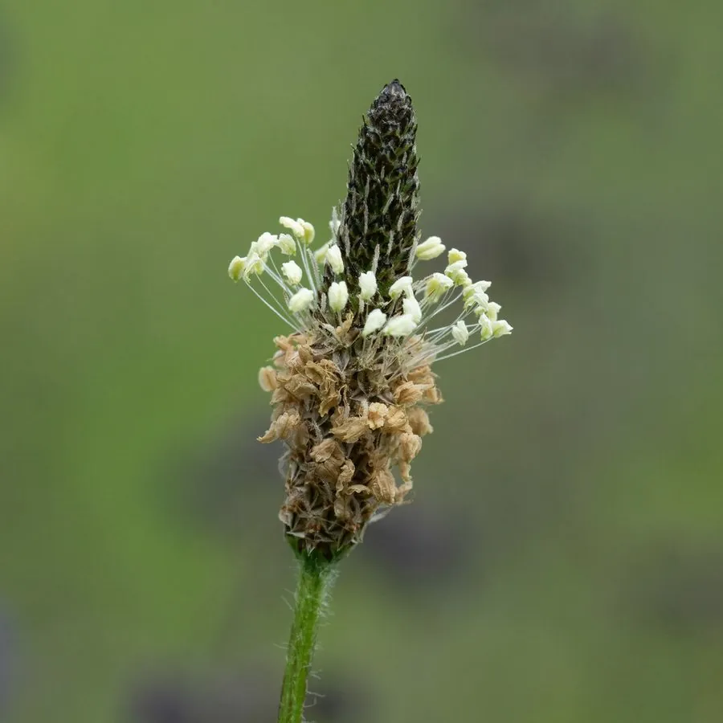

两栖动物 · 动物界
负子蟾 Pipa pipa

南美洲亚马逊流域的奇特蛙类，身体扁平似枯叶，雌蛙把卵嵌入背部皮肤，孵化后小蛙从背上钻出。
- 分类
- 门脊索动物门纲两栖纲目无尾目科负子蟾科属负子蟾属
- 栖息环境
- 亚马逊流域水流缓慢的河湾、沼泽和静水池塘
- 地理分布
- 南美洲亚马逊河流域及圭亚那等地
- 保护级别
- IUCN 无危（LC）；非中国原产，在中国无保护级别
物种志
负子蟾体长 10–15 厘米，雌蟾可达 17 厘米。身体极度扁平，头部呈三角形，眼睛很小，没有舌头，指尖呈星状，有利于在泥底摸索；体色多为灰褐色或橄榄褐色，皮肤表面有疣粒和感觉器官，整体像一片沉在水底的枯叶。
它生活在亚马逊河流域水流缓慢的河湾、沼泽和静水池塘，几乎终生在水中，游泳能力不强，常伏在水底等待猎物，以昆虫、小鱼、蝌蚪和蠕虫为食。繁殖行为十分独特：雄蟾抱住雌蟾，雌蟾把卵产在水面，雄蟾将卵压到雌蟾背部，卵嵌入皮肤并逐渐被组织覆盖，约 3–4 周后小蛙直接从背部钻出。负子蟾因奇特的外形和育幼方式而闻名，野外种群暂无显著威胁。
形态与习性
- 食性昆虫、小鱼、蝌蚪和蠕虫
- 体长约 10–15 cm，雌蟾可达 17 cm
- 繁殖卵嵌入雌蟾背部皮肤，约 3–4 周后小蛙钻出
- 活动节律多在夜间活动，常伏于水底
- 外形身体扁平似枯叶，指尖呈星状
- 寿命约 8–10 年
趣味知识
- 负子蟾的卵嵌入雌蟾背部皮肤，小蛙发育成熟后从背上钻出。
- 它没有舌头，靠前肢把食物送进嘴里。
- 负子蟾扁平的身体贴在水底，看起来就像一片腐烂的树叶。